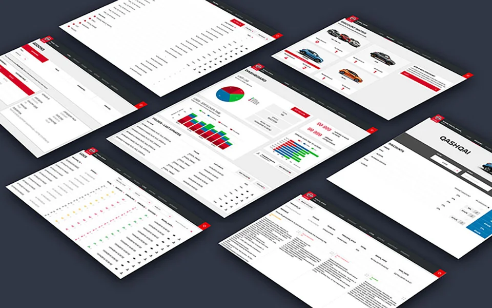
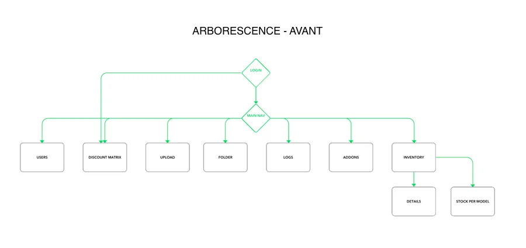
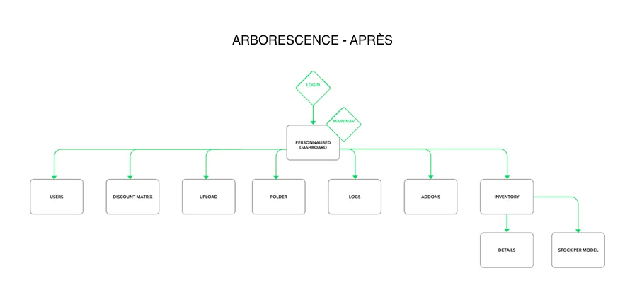
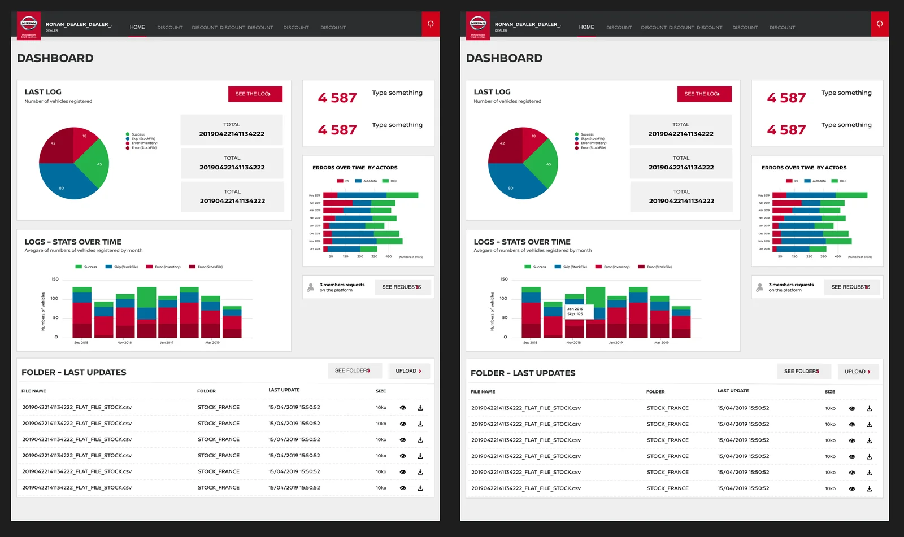
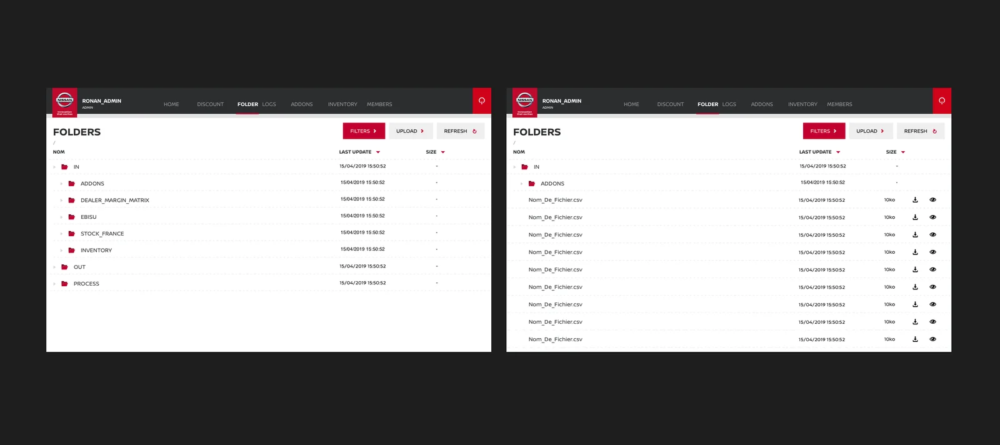
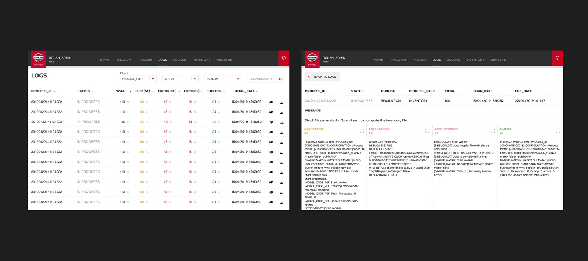
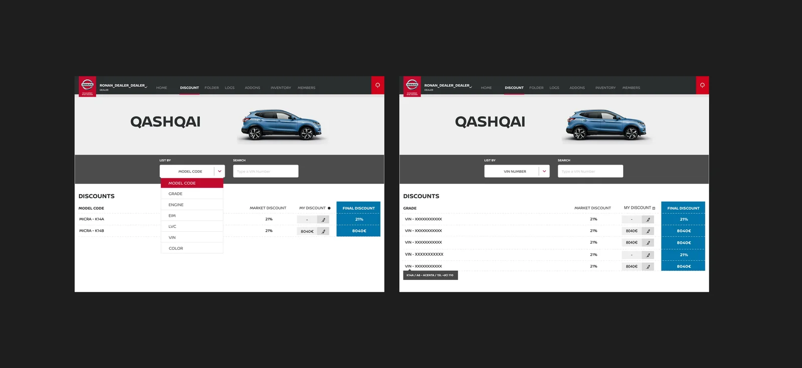

Nissan Vehicle Management Services

Contexte client : Ce projet fut réalisé dans le cadre de mon poste chez Publicis Sapient, où je travaillais pour le compte de Nissan Europe. Le projet fut construit en parallèle de la conception de l’e-commerce de Nissan Europe.
Mon rôle : En tant qu’UX designer, je devais étudier l’outils de logs du site Nissan Europe pour le transformer en un back office de l’e-commerce Nissan Europe qui était en cours de conception
Organisation : Je travaillais sous la gouvernance du Lead Designer, en collaboration étroite avec l’équipe technique.
La démarche
J’ai analysé le back-office existant des sites Nissan Europe (principalement basé sur de la recherche de fichier et de l’analyse de logs), et je l’ai transformé pour être plus ergonomique et ainsi permettre d’ajouter un nouveau type d’utilisateurs qui étaient les concessionnaires.






Un projet ? Un besoin ?
Discutons-en.
Si mon profil vous intéresse ou que vous souhaitez échanger, ce sera avec plaisir, soit via linkedIn (nouvel onglet), soit directement par mail à benech.r(@)gmail.com. Au plaisir !
Pour revenir à l'accueil, c'est par ici !